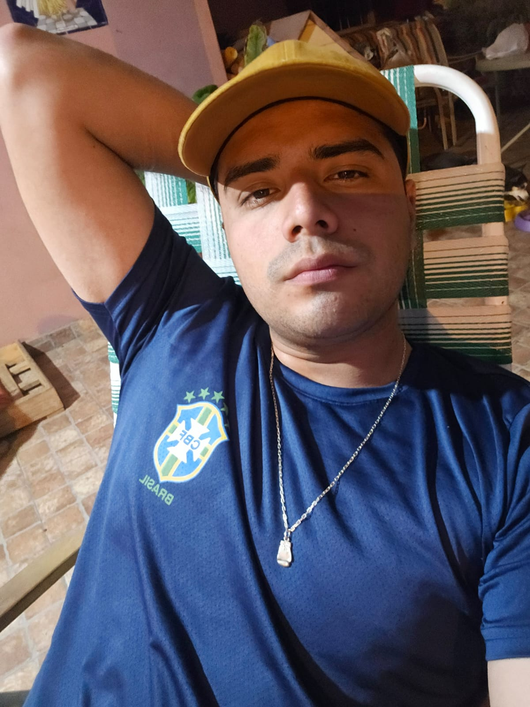

FRANCO TOMÁS TISSERA

Contacto
- Teléfono: 3512631587
- Email: frantissera18@gmail.com
Experiencia Laboral
Ejército Argentino
Compañía de Ingenieros Paracaidistas 4, Villa Carlos Paz, Córdoba
- Experto en seguridad con experiencia en turnos 24/7.
- Capacitado en combate en localidades, radio operador, asalto aéreo y buceo básico.
- Conocimientos en primeros auxilios y atención médica de emergencia.
Educación
Secundaria Completa
CED (Centro Educativo de Adultos) - Título de Secundaria Completa
Cursos
Idiomas
Inglés
Nivel: 1
Portugués
Nivel: 2